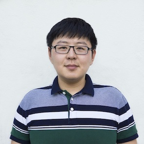

Weiming Che
PhD student
Control group, Department of Engineering
University of Cambridge
Trumpington Street
Cambridge CB2 1PZ
United Kingdom
Email: wc289@cam.ac.uk
Google Scholar, ORCID
Research Interests
My PhD project aims at
Education
PhD in Control Theory, 2018-present, Supervisor: Dr. Fulvio Forni
Control group, Department of Engineering, University of Cambridge
Thesis:Feedback control design for closed-loop oscillations via dominant system theory
BA and MEng in Engineering (Honours pass with distinction), 2014-2018
Department of Engineering, University of Cambridge
HKU-Cambridge Undergraduate Recruitment Scheme, 2013-2014
Faculty of Engineering, The University of Hong Kong